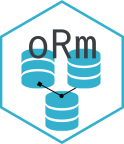

Assemble a CREATE TABLE statement
Source:R/Dialect-mssql.R, R/Dialect.R
sql_create_table.RdWraps the rendered column and constraint definitions in a dialect-appropriate `CREATE TABLE`. The default emits ANSI `CREATE TABLE [IF NOT EXISTS]`; dialects whose SQL lacks that spelling (notably T-SQL) provide their own existence guard.
Usage
sql_create_table.mssql(
x,
conn,
tablename,
quoted_name,
body,
if_not_exists = TRUE,
...
)
sql_create_table(
x,
conn,
tablename,
quoted_name,
body,
if_not_exists = TRUE,
...
)
sql_create_table.default(
x,
conn,
tablename,
quoted_name,
body,
if_not_exists = TRUE,
...
)Arguments
- x
An oRm object (usually a TableModel) used for dialect dispatch.
- conn
A DBI connection used for quoting.
- tablename
Character. The unquoted (optionally schema-qualified) name.
- quoted_name
Character. The same name, already quoted for the backend.
- body
Character. The rendered column and constraint definitions.
- if_not_exists
Logical. Whether to guard against an existing table.
- ...
Additional arguments for dialect-specific implementations.